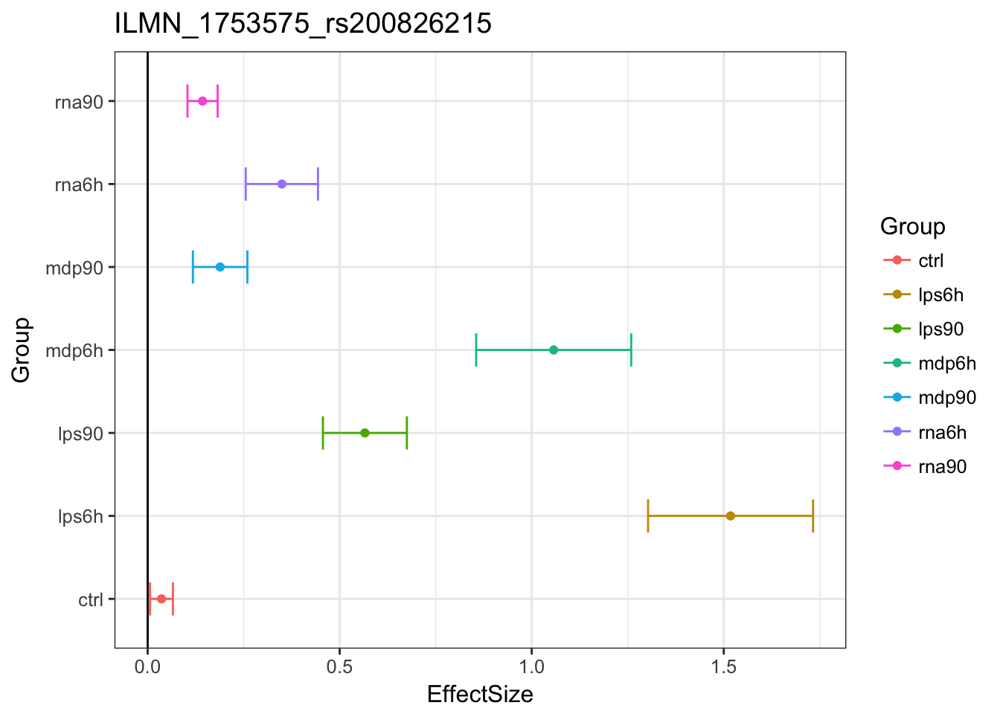

Immune Data Mash Analysis EZ V1 reQTLs Results
Yuxin Zou
2017-11-20
Warning in as.POSIXlt.POSIXct(Sys.time()): unknown timezone 'zone/tz/2017c.
1.0/zoneinfo/America/Chicago'Last updated: 2017-12-04
Code version: 5be320e
Set up data
library(lattice)
library(ggplot2)
library(colorRamps)
library(mashr)Loading required package: ashrlibrary(corrplot)corrplot 0.84 loadeddata = readRDS('../data/ImmuneQTLSummary.4MASH.rds')
data$max$se = data$max$beta/data$max$z
data$null$se = data$null$beta / data$null$z
K = 10
P = 5
vhat = 1if (vhat == 1) {
V = cor(data$null$z[which(apply(abs(data$null$z),1, max) < 2),])
} else {
V = diag(ncol(data$null$z))
}
# standardized effect
mash_data = mashr::set_mash_data(Bhat = as.matrix(data$max$beta)/as.matrix(data$max$se),
Shat = 1,
V = as.matrix(V),
alpha = 1)MASH results
# EZ
resEZ = readRDS('../output/ImmuneEZ.V1.center.mash_model.K10.P5.rds')
resEZ$result = readRDS('../output/ImmuneEZ.V1.center.mash_posterior.K10.P5.rds')Here is a plot of weights learned.
options(repr.plot.width=12, repr.plot.height=4)
barplot(get_estimated_pi(resEZ), las = 2, cex.names = 0.7)
Original estimates 
MASHestimates
reQTLs
The reQTL is defined as different standardized effects. Find genes having \(\beta_{Trt}/s\) significantly different from \(\beta_{Ctrl}/s\), among the top eQTLs.
subset.data = function(data, subset){
data.subset = data
data.subset$Bhat = data$Bhat[subset,]
data.subset$Shat = data$Shat[subset,]
data.subset$Shat_alpha = data$Shat_alpha[subset,]
data.subset
}LPS 6h
# Define A
eQTL.index.lps6h = get_significant_results(resEZ, conditions = 2)
A.lps6h = rbind(c(1,-1,0,0,0,0,0))
row.names(A.lps6h) = c('Ctrl-lps6h')resEZ.lps6h = resEZ
eQTL.lps6h = subset.data(mash_data, eQTL.index.lps6h)
resEZ.lps6h$result = mash_compute_posterior_matrices(resEZ, eQTL.lps6h, A=A.lps6h, algorithm.version = 'R')
saveRDS(resEZ.lps6h,
paste0('../output/ImmuneEZ.V',vhat,'.center.resEZ.reQTL.lps6h.K',K,'.P',P,'.rds'))resEZ.lps6h = readRDS(paste0('../output/ImmuneEZ.V',vhat,'.center.resEZ.reQTL.lps6h.K',K,'.P',P,'.rds'))
length(get_significant_results(resEZ.lps6h))[1] 1389Using MASH, we found 27% [17%] of lps 6h eQTLs are reQTLs.
LPS 90
resEZ.lps90 = readRDS(paste0('../output/ImmuneEZ.V',vhat,'.center.resEZ.reQTL.lps90.K',K,'.P',P,'.rds'))
length(get_significant_results(resEZ.lps90))[1] 1522We found 28.9% [15%] of lps 90 eQTLs are reQTLs.
MDP 6h
resEZ.mdp6h = readRDS(paste0('../output/ImmuneEZ.V',vhat,'.center.resEZ.reQTL.mdp6h.K',K,'.P',P,'.rds'))
length(get_significant_results(resEZ.mdp6h))[1] 1839We found 34.69% [9%] of mdp 6h eQTLs are reQTLs.
MDP 90
resEZ.mdp90 = readRDS(paste0('../output/ImmuneEZ.V',vhat,'.center.resEZ.reQTL.mdp90.K',K,'.P',P,'.rds'))
length(get_significant_results(resEZ.mdp90))[1] 1845We found 34.82% [9%] of mdp 90 eQTLs are reQTLs.
RNA 6h
resEZ.rna6h = readRDS(paste0('../output/ImmuneEZ.V',vhat,'.center.resEZ.reQTL.rna6h.K',K,'.P',P,'.rds'))
length(get_significant_results(resEZ.rna6h))[1] 1845We found 34.69% [18%] of rna 6h eQTLs are reQTLs.
RNA 90
resEZ.rna90 = readRDS(paste0('../output/ImmuneEZ.V',vhat,'.center.resEZ.reQTL.rna90.K',K,'.P',P,'.rds'))
length(get_significant_results(resEZ.rna90))[1] 1331We found 24.72% [3%] of rna 90 eQTLs are reQTLs.
In the paper, they found 3-18% of cis eQTLs in each condition are reQTLs.
Treatment specificity of reQTLs
LPS 6h
reQTL.index.lps6h = get_significant_results(resEZ.lps6h)
A.lps6hTRT = rbind(c(0,1,0,-1,0,0,0),
c(0,1,0,0,0,-1,0))
row.names(A.lps6hTRT) = c('lps6h-mdp6h', 'lps6h-rna6h')resEZ.lps6hTRT = resEZ
reQTL.lps6h = subset.data(eQTL.lps6h, reQTL.index.lps6h)
resEZ.lps6hTRT$result = mash_compute_posterior_matrices(resEZ, reQTL.lps6h, A=A.lps6hTRT, algorithm.version = 'R')
saveRDS(resEZ.lps6hTRT,
paste0('../output/ImmuneEZ.V',vhat,'.center.resEZ.reQTL.lps6hTRT.K',K,'.P',P,'.rds'))resEZ.lps6hTRT = readRDS(paste0('../output/ImmuneEZ.V',vhat,'.center.resEZ.reQTL.lps6hTRT.K',K,'.P',P,'.rds'))
length(get_significant_results(resEZ.lps6hTRT))[1] 545We found 36.86% [32%] lps6h reQTLs are stimulus specific compared with mdp6h, 36.72% [34%] lps6h reQTLs are stimulus specific compared with rna6h.
LPS 90
resEZ.lps90TRT = readRDS(paste0('../output/ImmuneEZ.V',vhat,'.center.resEZ.reQTL.lps90TRT.K',K,'.P',P,'.rds'))
length(get_significant_results(resEZ.lps90TRT))[1] 1469We found 52.76% [14%] lps 90min reQTLs are stimulus specific compared with mdp 90min, 94.55% [51%] lps 90min reQTLs are stimulus specific compared with rna 90min.
MDP 6h
resEZ.mdp6hTRT = readRDS(paste0('../output/ImmuneEZ.V',vhat,'.center.resEZ.reQTL.mdp6hTRT.K',K,'.P',P,'.rds'))
length(get_significant_results(resEZ.mdp6hTRT))[1] 801We found 41.82% [15%] mdp 6h reQTLs are stimulus specific compared with lps 6h, 11.58% [13%] mdp 6h reQTLs are stimulus specific compared with rna 6h.
MDP 90
resEZ.mdp90TRT = readRDS(paste0('../output/ImmuneEZ.V',vhat,'.center.resEZ.reQTL.mdp90TRT.K',K,'.P',P,'.rds'))
length(get_significant_results(resEZ.mdp90TRT))[1] 1781We found 55.72% [15%] mdp 90min reQTLs are stimulus specific compared with lps 90min, 94.42% [46%] mdp 90min reQTLs are stimulus specific compared with rna 90min.
RNA 6h
resEZ.rna6hTRT = readRDS(paste0('../output/ImmuneEZ.V',vhat,'.center.resEZ.reQTL.rna6hTRT.K',K,'.P',P,'.rds'))
length(get_significant_results(resEZ.rna6hTRT))[1] 832We found 43.31% [21%] rna 6h reQTLs are stimulus specific compared with lps 6h, 14.15% [45%] rna 6h reQTLs are stimulus specific compared with mdp 6h.
RNA 90
resEZ.rna90TRT = readRDS(paste0('../output/ImmuneEZ.V',vhat,'.center.resEZ.reQTL.rna90TRT.K',K,'.P',P,'.rds'))
length(get_significant_results(resEZ.rna90TRT))[1] 1251We found 90.08% [38%] rna 90min reQTLs are stimulus specific compared with lps 90min, 90.76% [29%] rna 90min reQTLs are stimulus specific compared with mdp 90min.
Time point specificity of reQTLs
LPS 6h
A.lps6hTime = rbind(c(0,1,-1,0,0,0,0))
row.names(A.lps6hTime) = c('lps6h-lps90')resEZ.lps6hTime = resEZ
resEZ.lps6hTime$result = mash_compute_posterior_matrices(resEZ, reQTL.lps6h , A=A.lps6hTime, algorithm.version = 'R')
saveRDS(resEZ.lps6hTime,
paste0('../output/ImmuneEZ.V',vhat,'.center.resEZ.reQTL.lps6hTime.K',K,'.P',P,'.rds'))resEZ.lps6hTime = readRDS(paste0('../output/ImmuneEZ.V',vhat,'.center.resEZ.reQTL.lps6hTime.K',K,'.P',P,'.rds'))
length(get_significant_results(resEZ.lps6hTime))[1] 357We found 25.7% [45%] lps6h reQTLs are time point specific compared with lps90min.
LPS 90
resEZ.lps90Time = readRDS(paste0('../output/ImmuneEZ.V',vhat,'.center.resEZ.reQTL.lps90Time.K',K,'.P',P,'.rds'))
length(get_significant_results(resEZ.lps90Time))[1] 552We found 36.27% [36%] lps 90min reQTLs are time point specific compared with lps6h.
MDP 6h
resEZ.mdp6hTime = readRDS(paste0('../output/ImmuneEZ.V',vhat,'.center.resEZ.reQTL.mdp6hTime.K',K,'.P',P,'.rds'))
length(get_significant_results(resEZ.mdp6hTime))[1] 470We found 41.82% [40%] mdp 6h reQTLs are time point specific compared with mdp 90min.
MDP 90
resEZ.mdp90Time = readRDS(paste0('../output/ImmuneEZ.V',vhat,'.center.resEZ.reQTL.mdp90Time.K',K,'.P',P,'.rds'))
length(get_significant_results(resEZ.mdp90Time))[1] 561We found 30.41% [38%] mdp 90min reQTLs time point specific compared with mdp 6h.
RNA 6h
resEZ.rna6hTime = readRDS(paste0('../output/ImmuneEZ.V',vhat,'.center.resEZ.reQTL.rna6hTime.K',K,'.P',P,'.rds'))
length(get_significant_results(resEZ.rna6hTime))[1] 1613We found 87.43% [64%] rna 6h reQTLs are time point specific compared with rna 90min.
RNA 90
resEZ.rna90Time = readRDS(paste0('../output/ImmuneEZ.V',vhat,'.center.resEZ.reQTL.rna90Time.K',K,'.P',P,'.rds'))
length(get_significant_results(resEZ.rna90Time))[1] 1068We found 80.24% [32%] rna 90min reQTLs are time point specific compared with rna 6h.
Session information
sessionInfo()R version 3.4.2 (2017-09-28)
Platform: x86_64-apple-darwin15.6.0 (64-bit)
Running under: macOS High Sierra 10.13.1
Matrix products: default
BLAS: /Library/Frameworks/R.framework/Versions/3.4/Resources/lib/libRblas.0.dylib
LAPACK: /Library/Frameworks/R.framework/Versions/3.4/Resources/lib/libRlapack.dylib
locale:
[1] en_US.UTF-8/en_US.UTF-8/en_US.UTF-8/C/en_US.UTF-8/en_US.UTF-8
attached base packages:
[1] stats graphics grDevices utils datasets methods base
other attached packages:
[1] corrplot_0.84 mashr_0.2-4 ashr_2.1-27 colorRamps_2.3
[5] ggplot2_2.2.1 lattice_0.20-35
loaded via a namespace (and not attached):
[1] Rcpp_0.12.14 compiler_3.4.2 git2r_0.19.0
[4] plyr_1.8.4 iterators_1.0.8 tools_3.4.2
[7] digest_0.6.12 evaluate_0.10.1 tibble_1.3.4
[10] gtable_0.2.0 rlang_0.1.2 Matrix_1.2-11
[13] foreach_1.4.3 yaml_2.1.14 parallel_3.4.2
[16] mvtnorm_1.0-6 stringr_1.2.0 knitr_1.17
[19] rprojroot_1.2 grid_3.4.2 rmarkdown_1.7
[22] rmeta_2.16 magrittr_1.5 backports_1.1.1
[25] scales_0.5.0 codetools_0.2-15 htmltools_0.3.6
[28] MASS_7.3-47 assertthat_0.2.0 colorspace_1.3-2
[31] labeling_0.3 stringi_1.1.5 lazyeval_0.2.1
[34] munsell_0.4.3 doParallel_1.0.11 pscl_1.5.2
[37] truncnorm_1.0-7 SQUAREM_2017.10-1This R Markdown site was created with workflowr